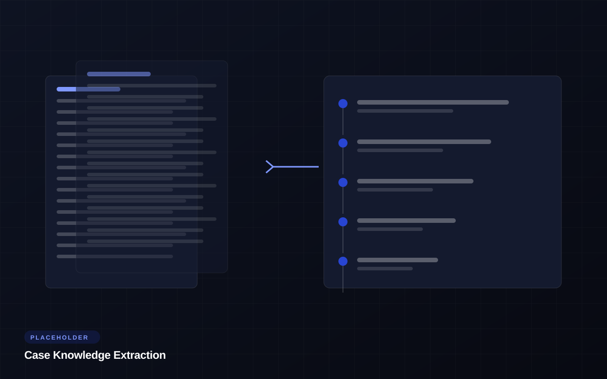
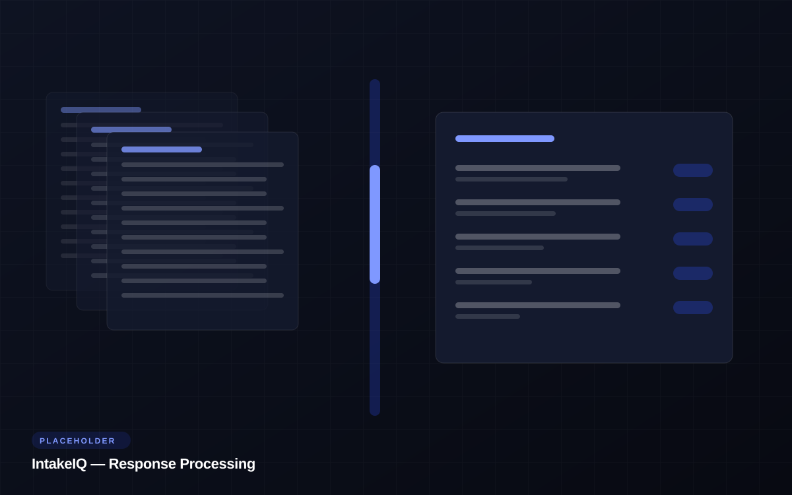
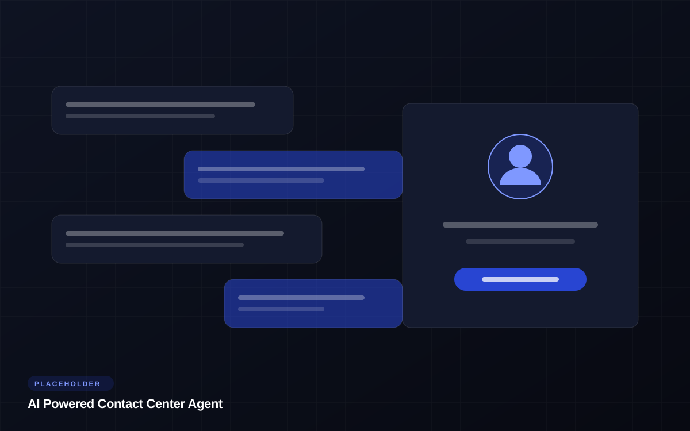
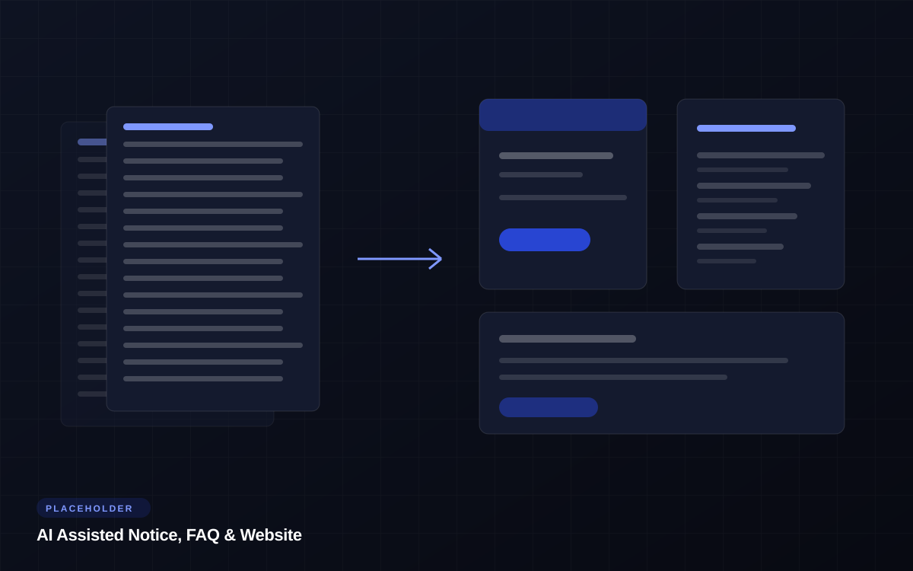
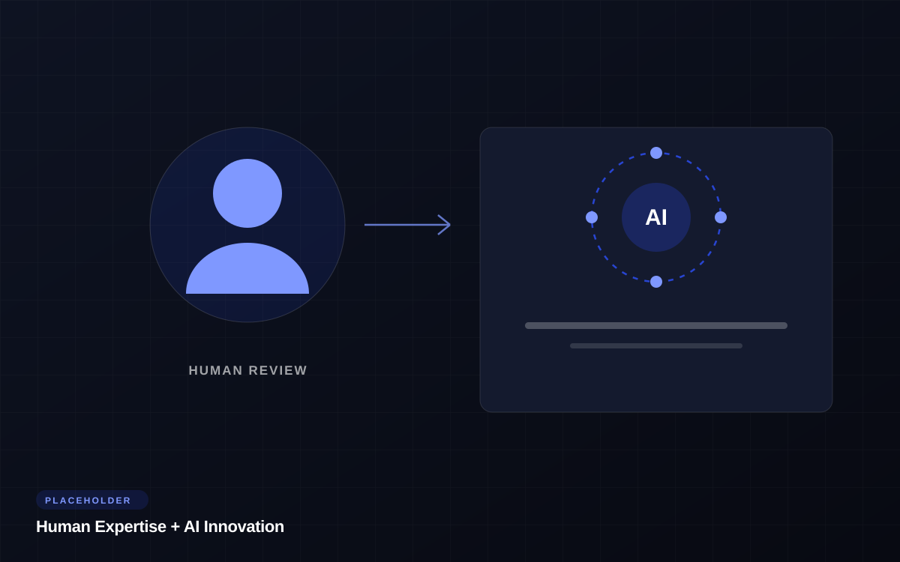

Powered by Lat61
Leveraging Lat61, Point Wild's advanced AI platform, Simpluris delivers intelligent automation across high volume enterprise workflows to help drive greater efficiency, accuracy, scalability, and operational insight throughout the settlement administration lifecycle.
Learn MoreWatch the overview
A detailed introduction to the technology behind AI augmented settlement administration.
Industry expertise, enterprise AI
By combining industry leading administration expertise with enterprise grade AI capabilities, Simpluris enhances how cases are onboarded, processed, reviewed, and supported. Thereby enabling faster execution, improved quality controls, and better outcomes.
Fraud & Risk
Protecting Settlement Integrity
As fraudulent and automated claim activity becomes increasingly sophisticated, our AI enhanced fraud analysis tools help identify suspicious activity across both digital and physical submissions.
Our systems evaluate patterns and anomalies to detect:

Case Onboarding
Accelerating Case Setup & Project Readiness
Our AI powered case knowledge extraction tools rapidly analyze court documents, settlement agreements, and case materials to:

Response Processing
Faster Intake, Greater Accuracy & Increased Capacity
Our proprietary AI and intake technology enhances the processing of:
By intelligently scanning and interpreting physical and digital submissions, IntakeIQ™:

Class Member Support
Smarter Support for Class Members
Our AI assisted contact center technology helps class members receive fast, accurate, and consistent responses by leveraging approved case materials including:
Built-in safeguards and escalation protocols ensure:
Data Readiness
Earlier Risk Identification & Faster Data Readiness
Our AI assisted data evaluation capabilities analyze incoming datasets early in the administration process to identify:
This enables our teams to begin remediation efforts sooner and accelerate downstream data cleansing and processing.

Accelerating Time to Notice
We are developing AI-assisted workflows that help our teams more efficiently generate settlement communication materials, including:
These tools are designed to improve drafting efficiency, reduce turnaround times, and increase consistency while maintaining attorney and project team review processes.

Human Expertise + AI Innovation
Our AI initiatives are designed to augment, not replace, experienced settlement administration professionals. Every solution operates within strict operational controls, human oversight, and case-specific compliance requirements.
By combining deep industry expertise with modern AI capabilities, we help clients achieve:
Contact Us
Our focus on providing superior customer service, coupled with our experience and ability to create innovative solutions, has given Simpluris a reputation for exceptional settlement administration. Learn more about our suite of services at Simpluris.com.
Request a Proposal